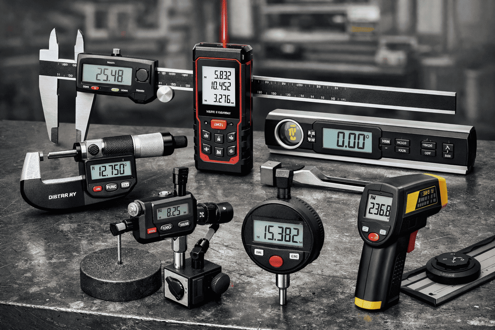
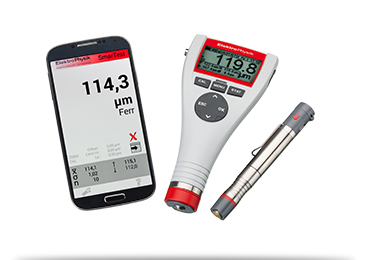
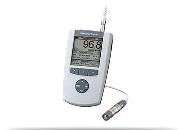
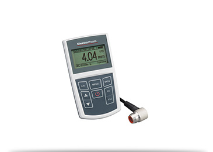
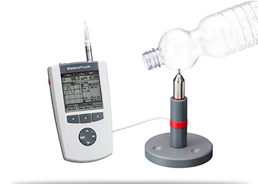
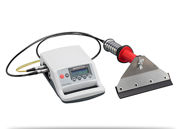
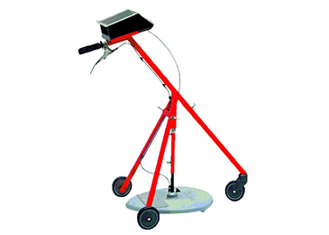
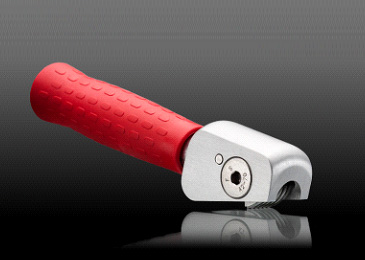
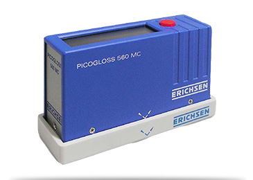

Premium Measuring & Precision Tools
We stock the widest range of precision measuring instruments and inspection equipment from trusted brands — micrometers, vernier calipers, torque testers, gauss meters and more.
Download CatalogBrands
Featured Precision Instruments

MiniTest 700
A versatile coating thickness gauge with digital signal processing for non-destructive measurements on steel and non-ferrous metals.

MiniTest 7400
High-end thickness testing system featuring interchangeable sensors and a high-resolution graphic display for laboratory accuracy.

MiniTest 400
Ultrasonic wall thickness gauge designed to measure the thickness of various materials including glass, plastics, and metals.

MiniTest 7400 FH
Professional sidewall thickness gauge using the magneto-static method to measure non-magnetic materials like plastic bottles.

PoroTest 7
High-voltage holiday detector used to locate pores and cracks in insulating coatings applied to conductive substrates.

StratoTest 4100r
An industry standard for measuring the thickness of road surfaces, asphalt, and concrete layers non-destructively.

SecoTest
Ultrasonic coating thickness gauge specifically designed for non-destructive measurement on wood, plastic, and other non-metal substrates.

PicoGloss 560MC
A portable, high-precision gloss meter used to measure gloss levels on paint, plastics, and metal surfaces at standard 60° angles.